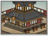

Basic Unit Statistics (can be modified by difficulty level, arts, skills, traits and retainers)
| Recruitment Cost | 1300 | |
| Upkeep Cost | 150 | |
| Melee Attack | 28 | 80% |
| Charge Bonus | 45 | 90% |
| Bonus vs Cavalry | 0 | 0% |
| Melee Defence | 4 | 11% |
| Armour | 8 | 53% |
| Morale | 40 | 80% |
Strengths & Weaknesses
- Devastating charge.
- Excellent morale.
- Average in prolonged melee.
- Vulnerable to cavalry and missiles.
Abilities
- Banzai - This unit can enter into a frenzied state for a short period of time, temporarily increasing its speed, charge and melee attacks, and making it unbreakable.
Requires
- Buildings: 
Description
These mighty warriors charge into battle carrying the fearsome two-handed no dachi.
The no dachi is a rare and beautiful weapon. Due to the difficulty of its forging and use, few are made and carried into battle, so those who do use them are true masters of the sword. They also possess incredible bravery, as charging headlong into enemy infantry takes immense composure and a certain disregard for self-preservation. Best used as shock troops, they will suffer heavy losses if left in a defensive position. They are also weak against cavalry and missile troops as their large weapons offer little protection against such threats. To wield the no dachi requires incredible strength, a skill often praised in Japanese mythology. The warrior Benkei, whose origins are steeped in legend, was described as a man of great strength and loyalty. However, it was his exploits on the Gojo Bridge in Kyoto that secured his place in legend. Benkei set himself up on the bridge and vowed to claim one thousand swords by challenging every man to cross the bridge. The thousandth man to cross was general Minamoto no Yoshitsune who defeated Benkei. Chastened by this defeat Benkei vowed to fight for Yoshitsune and continued to do so until his death at the Siege of Koromogawa.